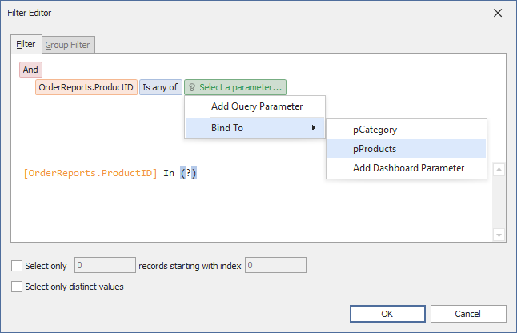

Cascading Parameters
Create cascading parameters to filter a list of predefined parameter values based on another parameter's values. The following image illustrates cascading parameters where the pProducts parameter values are filtered by the selected category:

In case of two parameters, the first parameter is used to filter the data source for the second parameter with dynamic list settings.
Create Cascading Parameters
The dashboard in this example is connected to a Northwind database (an SQL Database) and contains three queries: Categories, Products, and OrderReports. The Grid item visualizes data from the OrderReports query.
In this tutorial, you will create two dashboard parameters:
- The pCategory parameter filters the Products query. The Products query is a data source for the pProducts parameter.
- The pProducts parameter filters the OrderReports query.
The steps below create cascading parameters in the WinForms Dashboard Designer:
Create a dashboard parameter called pCategory with dynamic list settings. Use the Categories query as a data member and the CategoryID as a value member.
The parameter settings may look as follows:

Use the created pCategory parameter to filter the Products query.
To do this, invoke the Query Builder and click the Filter... button to specify the filter criteria in the Filter Editor. Choose the Bind To option to automatically bind a query parameter to the created dashboard parameter:

The resulting query looks as follows:
[Products.CategoryID]=?pCategoryCreate a dashboard parameter called pProducts with dynamic list settings. Use the Products query as a data member and the ProductID as a value member.
The parameter settings may look as follows:

Use the pProducts dashboard parameter to filter the OrderReports query.
To do this, invoke the Query Builder and click the Filter... button to specify the filter criteria in the Filter Editor. Choose the Bind To option to automatically bind a query parameter to the created dashboard parameter:

The resulting query looks as follows:
[OrderReports.ProductID] In ?pProductsCreate a Grid item to visualize data from the filtered OrderReports query.
Tip
When using a multi-value parameter to filter a query, create the condition with the Is any of or Is none of operator.